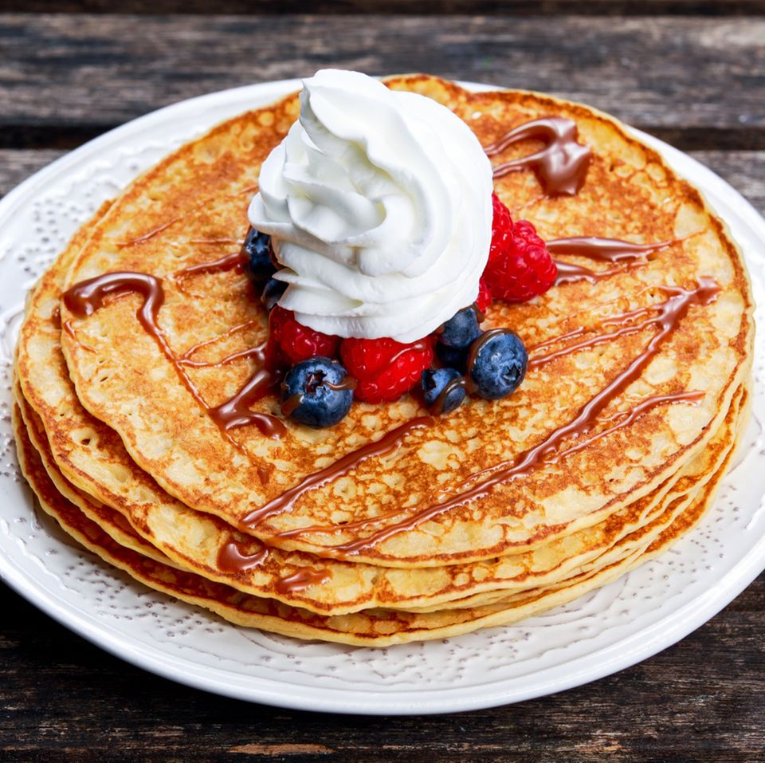

Klassische Pfannkuchen Rezept

Klassische Pfannkuchen
Zubereitung: 8 Minuten
Schwierigkeit: Einfach
Zutaten für 2 Personen:
Zutaten:
- 150 g Weizenmehl Type 405
- 2 Eier
- 2 TL Zucker
- 0.5 Prise(n) Salz
- 250 ml Milch
- 2 EL neutrales Öl
Zubereitung:
- Mehl, Eier, Zucker, Salz und Milch in eine Schüssel geben und zu einem glatten Teig verrühren.
- Das Öl in einer Pfanne erhitzen.
- Den Teig portionsweise in die Pfanne geben und von beiden Seiten goldbraun backen.
- Die Pfannkuchen nach Belieben belegen und servieren.
Hauptseite